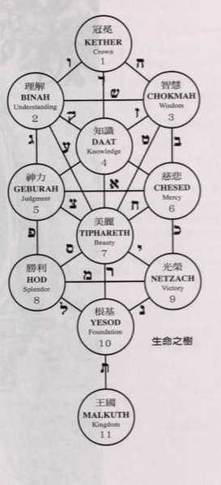
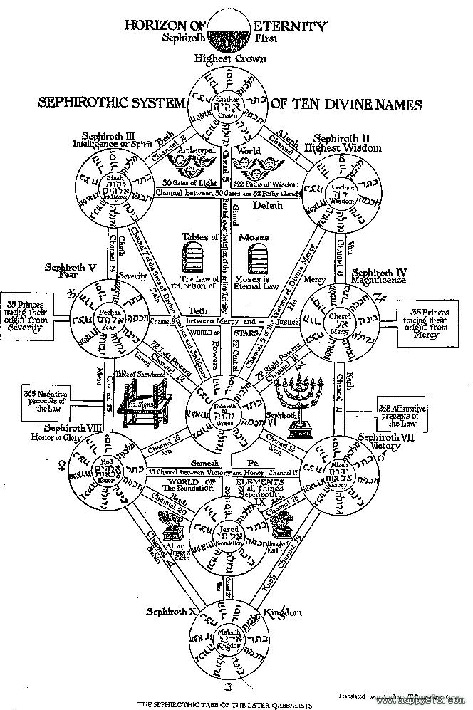
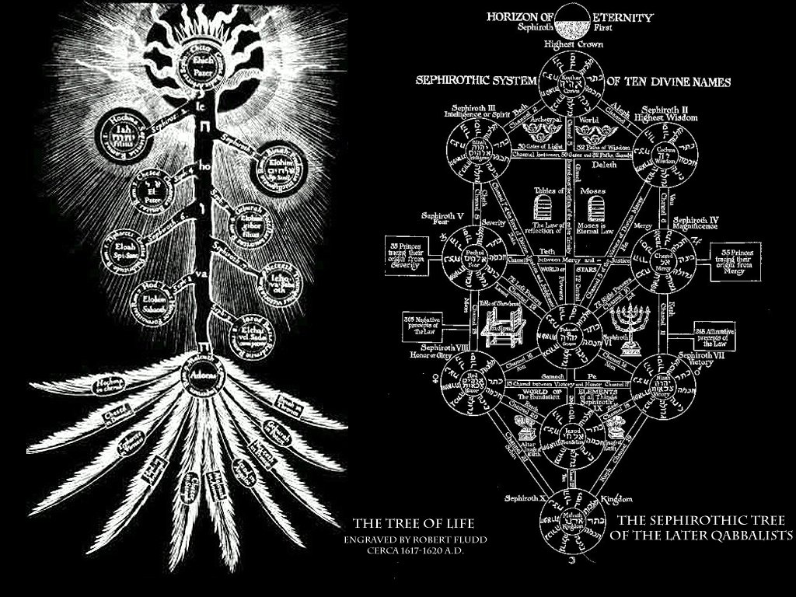

卡巴拉生命之树

又名倒生树，全称卡巴拉生命树。卡巴拉生命之树，曾经在EVA的片头曲和碇元渡的办公室中出现过，卡巴拉生命之树为希伯来文，英译为：Cabala/Kabala/Qabalah/Kabbalah等等。“卡巴拉”是犹太教的神秘哲学，传说它最原始的根源来自于埃及文化。相传“卡巴拉”的概念是由摩西——犹太教律法“Torah”的编撰者在此律法中完整表述。而生命之树，就是“卡巴拉”思想的核心，他被视为是神创造宇宙的蓝图，或者称之为神体的构造图。生命之树不只是一个存在于纸上的图样，而且是一个真正存在的，一个三度空间的宇宙，也就是我们存在于其中的这个宇宙。
卡巴拉的思想原理来自圣经「创世纪」、「启示录」，还有三至六世纪出现的「创造之书」（sepher
yetzirah）。卡巴拉思想的研究据说能够看到“宇宙神秘的因果关系”，十三世纪编集的「光辉之书」（sepher ha-zohar）即在卡巴拉思想的原型中占有重要位置。
 
接下来说明生命之木。卡巴拉思想是以生长於天国的「生命之木」来象徵宇宙全体，其意义非常难解，真要说的话，生命之木意味著广大的宇宙、身为小宇宙的人体，以及达到神之境界的精神遍历。这个生命之木是由十个圆（sephira）与22个径（pass）所组成。人类是处於个别的王国，经过22个径到十个圆，进行冥想的旅途，直到王冠为止。此外，据说每个圆都有守护、指导人们的大天使。
生命之树大概可以分为三支柱，十个原质，四个世界，二十二路径等基本结构。
分辨善恶树与生命树是同一棵树，人类由完人境界向下堕落的途径过程称为分辨善恶树，世间万物以至宇宙间所有的定律本无善恶之分，直至人类堕落后有了「自我」这种概念才有所谓善与恶之分。当人类觉悟要回复完人境界，逆向提升的途径就是生命树。两种树实为一棵树，只是方向不同，故有两种名称以作分辨方向。
逆向提升人类灵性的生命树，在入口与出口各有魔鬼与天使看守，乃代表要进入生命树重返永生，先要战胜心魔的引诱，去到最后还要作出最后的突破，拥有胜过天神(天使)的力量才能成功。多人都知道基督教乃源自犹太教，但却少有人知道犹太教本身可分为两种宗派，大部份犹太人信奉的一般皆称为犹太教，教义对于耶和华上帝的看法，其神学概念与基督教、天主教及东正教都大同小异，都认为耶和华是一位人格化的上帝，然而，另有小部份犹太人信仰的却是一位非位格化的上帝，通常这种信仰被称为犹太秘教，情况就有点像佛教分为显密两宗一样。
犹太秘教的教义认为摩西所传的道理分为两部份，一部份是为了大多数资质平庸、自甘卑下的羔羊所传的道理，而另一部份的奥秘，只选择传授与少数智能较高、愿意以毕生的精力去追寻真理的山羊。这部份的奥秘，就是摩西揭示了神人本来同体的秘义，这种境界，被称为「原人阿当」(Adam
Kadmon)，其实亦就是一种人类还未堕落之前的完全境界。
犹太秘教认为，要到达这种人神一体的原人阿当境界，必须通过代表生命树的卡巴拉(Kabalah)的修练，这种修练方法近似道家的返本归真修炼法。卡巴拉的内容主要包括：创世的秘密、生命之谜、个人以至全宇宙人类的命运预知术、改变命运的秘法、收藏在圣经内的秘密、神与魔鬼的奥秘。这些奥秘除了收藏在天车之书、创造之书(Sefer
Yezirah)与光之书(Sefer ha-Bahir)三本希伯来文秘本之外，另有部份由先知所传下，但须先观察弟子的器根，然后挑选合适者，代代口耳相传，只淮许流传在以色列十二支族的后人之间(此亦即摩西宣称以色列人为上帝选民的真正原因)。卡巴拉的教义主要分为三部份，就是卡巴拉神学(Theoretical
Kabalah)、卡巴拉冥想(Meditative Kabalah) 和卡巴拉咒法(Practical Kabalah)，你们若想多了解犹太秘教的核心教义，可参考以上提供的希伯来古籍。
--------------------------------------------------------------------------------
以犹太秘教的观点而言，伊甸园只是一种境界，并非确实存在。「太初有道，道与神同在，这道太初与神同在。」实际上道就是非位格化的神，原人亚当就是天人境界，阿当夏娃的堕落，实际上就是阿含经内讲述光人下凡，因贪食果实而成为人的记载。犹太秘教有所谓全灵的概念，所有的灵乃出于全灵的分裂，实际上摩西所传是一种即生证神的神法，但由于他传法的时代，希伯来民族的民志未开，当时他们所崇拜的神只超过百种，摩西唯有用以一念代万念的方法，将所有不同的神化为一个神，开创一个近似佛教净土宗的宗派，以供大部份人民信仰，至于真正的神法，只能无奈地只传与少数悟性较高的人民。
另外，可以告诉你多一点秘密，分辨善恶树的蛇，实际上就是印度教及瑜珈的蛇火、道家的一阳生，如果你已经修过"拙火定"的话，应该明白是什么一回事。启示录的内容，有部份其实是修行的法门，那些七天使、七灯与七碗，所指的是人体的七个轮位，西方有些秘密教派，可以完全破解到其中的秘密。
卡巴拉在西方传统神秘学中，它的建立是从一个称之为“生命之树”的图开始的。这图表包含着十个描绘“Sephiroth”的圆圈（单数请用Sephirah）；意思指“天体”“数字”“散发”。Sephiroth从一到十都被精心安排在它们原本的领域里。每一个Sephirah都有一个原型观念。也就是说，Sephiroth表现出神格与创造这世界的步骤。在物质界中，根据着古老的观念，它们表现在神圣的范围里。
越过第一个Sephirah “Kether（Crown；王冠）”之后，遇见的是三层能量的环，
第一层是虚空（原文为Ain），
再来是无限（Ain-Soph），
最后一层是无数的光（Ain-Soph Aur）。
这些过程显示着，从最早的无到存在个体出现的有之程序（Kether算是存在的个体）。它们没有数字，纵使是克罗利大师，也只能意思地把它们定在0,00,与000。
但这些东西在卡巴拉思想中却是很低阶的；因为它们仍具有物质的存在。其实生命之树共有四株，刚刚写的是最低阶、物质最多，名为行动界World of
Action（Olam ha-Assiah）。生命之树也存在于其它三个高层的时空之中。比刚刚较高一级与物质已经很少的世界是贵族界World of
Nobility（Olam Atziluth），柏拉图的世界大概就是那样子吧。
在Atziluth，每个Sephirah都与一个特殊少见的神灵名字有所关联。举例︰与Geburah有关的圣灵是Elomhim Gibor，“全能的神”在Elomhim
Gibor他的职务分配上是未经仁慈调和的严厉审判官与公正的分配者。在希腊罗马神话中，这圣灵的名字当然是Mars噜﹏下一个世界是创造界World of
Creation（Olam ha-briah），身在其中的Sephiroth都与天使长有关系。在这大家会听见很熟悉的名字，如：Raphael（拉菲尔）、Micheal（米契尔）、Gabriel（加布列尔）（请参阅熊熊所写的【黄道天使守护】）。在Briah之上则是形成界World
of Formation（Olam ha-Yetzirah），在这Sephiroth与不同的天使或主权天使有关系，如：Cherubim（四翼天使）与Seraphim（六翼天使）。
--------------------------------------------------------------------------------
卡巴拉是犹太神秘思想的最终奥义，语源在希伯来语中的意思是口传、传授。据说根源于亚伯拉罕由天使传授而得知「无法以文字表示」的秘密，长久以来一直是犹太思想最神秘的部份，直到十三世纪才慢慢为人所知，之后成为炼金术师、宗教、蔷薇十字军等等的一部份思想根源。
卡巴拉的思想原理来自圣经「创世纪」、「启示录」，还有三至六世纪出现的「创造之书」（Sepher Yetzirah）。卡巴拉思想的研究据说能够看到“宇宙神秘的因果关系”，十三世纪编集的「光辉之书」（Sepher
ha-Zohar）即在卡巴拉思想的原型中占有重要位置。
接下来说明生命之木。卡巴拉思想是以生长于天国的「生命之木」来象征宇宙全体，其意义非常难解，真要说的话，生命之木意味着广大的宇宙、身为小宇宙的人体，以及达到神之境界的精神遍历。这个生命之木是由十个圆（Sephira）与22个径（Pass）所组成。
人类是处于个别的（王国），经过22个径到十个圆，进行冥想的旅途，直到（王冠）为止。此外，据说每个圆都有守护、指导人们的大天使。
（Kether；王冠）－（Metatron，梅丹佐）与人类头顶的大宇宙之间的接点。有创造的泉源、纯粹存在、生命力的泉源之意。
（Chhokmah；知惠）－（Ratziel，拉结尔） 别名为「至高之父」，为男性原理及「动性」的象征。
（Binah；理解）－（Zaphkiel，亚夫结） 有「至高之母」的别名，和是相对应的关系，赋予所有事物的形体。
（Chesed；慈悲）－（Zadkiel萨德基尔） 意味着纯粹而神圣的宇宙法则－「爱」。
（Geburah；神之力）－（Camael；卡麦尔）别名是「天使的外科医生」。
（Tiphareth；美）－（Michael；米迦勒） 生命之木中央的位置。补充所有生物之能源的中心。
（Netsah；胜利）－（Hamiel，亚纳尔） 含有「丰饶」之意，数字是７。７是来自圣经创世纪之中上帝「创造的七天」。有坚实、勇气的意义在内。
（Hod；荣光）－（Raphael；拉斐尔） 有物质型态的「铸型」之意。
（Yesod；基盘）－（Gabriel；加百列） 意味着「astral体」，也就是灵魂与肉体之中的灵气。卡巴拉以此表现「前存在物质」。
（Malkuth；王国）－（Metatron；梅丹佐） 「物质的王国」之意。
▲构成生命之木的四个阶层（这里的拼法和天禁有些不同）
（Atziluth；神性界）原型：火
（亚当加达蒙）就位在这里。上位恶魔据说也是属于这里。
（Beriah；创造界）原型：风
这里是灵与魂的领域。
（Yetzirah；形成界）原型：水
人类灵魂的领域，由此开始，有了男女的区别。被认为是元素的世界。
（Assiah；物质界）原型：地
我们人类生存的世界，灵魂在此有了肉体。
卡巴拉生命之树名词补充
十个原质（The Ten Sephiroth）：
十个原质按照由上至下，由右到左的顺序分别是：
王冠（Crown）： 超越、神的本性；亦代表着净火天。
智慧（Wisdom）： 智慧、纯粹理性、创造原点；亦代表着恒星天/原动天。
理解（Understanding）：执行、实质的理性、创造之泉：亦代表着土星天。
仁爱（Love）: 爱、仁慈、恩宠、伟大；亦代表着木星天。
严格（Severity）: 法、神的权利、恶的发现、怒；亦代表着火星天。
美丽（Beauty）: 慈悲、调停、美；亦代表着太阳天。此原质正是生命之树的核心。
胜利（Victory）: 永远、膨胀、胜利；亦代表着金星天。
光辉（Spendor）: 尊严、收缩、光荣；亦代表着水星天。
基础（Foundation）: 基础、万物的基础、神的创造力；亦代表着月球天。
王国（Kingdom）: 王国、物质、人；亦代表着四元素所合成，即是物质的存在。
如果我们依次连结1到10的话又称为“火剑之路”（Path of the Flaming Sword）
四个世界（The Four Worlds）：
原形的世界（the Archetypal World）：位阶最高，最完美的世界。其它世界都是由此创造的。纯洁的灵魂和思想，代表着神的意志（the will of
deity）。
创造的世界（the Creative World）： 来自Atziluth的光开始组织起来。思想和观念开始被赋予形态。这是大天使的世界，神的心（the
heart of deity）
形成的世界（the Formation World）： 来自Briah的组织开始形成物质。形态开始表现。这是小天使的世界，神的心智（the mind of
deity）
物质的世界（the Material World）： 原始的光分崩离析，开始结晶形成物质，自然界，以及人的存在。抽象的观念变成具体的事物，这是人的世界。
三支柱（The Three Pillars）：
三支柱从右往左分别是：
慈悲之柱（Pillar of Mercy）、和谐之柱（pillar of Mildness）、严厉之柱（pillar of Severity）
二十二路径（The 22 Paths）：
“路径”是两个原质之间意义的连结，生命之树代表着精神到物质的产生过程。
在日本著名动画作品《新世纪EVA》（又译《新世纪福音战士》）中使用了生命之树的概念，使其更加广为人知。在其剧场版的后半部分《真心为你》中，初号机和九台量产型EVA所组成的生命之树排列改变了，绝对领域（A•T•Field）被反转，这样的后果就是使人体的外形发生了从“物质”状态回复到“精神”状态的逆向反应。人与人之间存在着隔阂，人体的外形正是依靠这种“心之壁”（即绝对领域）来维持人体外形的，一旦“心之壁”崩溃了（人与人之间的隔阂消除），肉体就会散架，变成一滩混合了灵魂的“原始汤”，所有人的“原始汤”汇合在一起，就成为了“生命之海”，所有的一切都恢复到原始萌芽状态，新的创世记传说开始……
在《新世纪福音战士》片头出现的图案，由十个圈和二十二条线组成，此时全剧一开始就悬着的一个迷团，绘于宽广的司令室的天花板，第三次浩劫仪式中十部EVA所组成的图形。“卡巴拉”一词源于希伯来的阿拉姆迦勒底语，意思是“口述传统”，可能是近似冥想，打坐之类方法寻求宇宙奥秘的修行法，据说是摩西在西奈山受十诫时由天神或大天使一并传授。此后以口传方式流传下来，直到第一，二世纪才见诸文字。
现在的卡巴拉生命树概念为由中世纪犹太神秘主义者犹太教教士“拉比”所创，他将过去古代的知识，以数字和字母的方式结合起来，作为解答宗教哲学问题上之依据。后来犹太教徒更进一步将事物起源区分为经由22条路径环环相扣的10个数字，每个数字都对应一个希伯来文字母，具体的分类图表则用生命之树来表示。十三世纪因《光辉之书》（SEFHER
HAZOHAR）而广为人知，这种说法到了十六世纪已经发展成类似基督教形式的哲学理论。全世界有许多宗教和流派信奉不同的生命树概念。亚森尼派甚至以生命之树（SEPHIROTH）为信仰核心，但是亚森尼的生命之树反倒比较接近印度玄学的领域。SEPHIROTH的真义是象征人类获得救赎的过程。线代表“存在的形式”（FORMS
OF EXISTRNCE），圆代表知觉的形式（FORMS OF CONSCLOUSNESS），前者是“智慧的次路径”，后者是“智慧的主路径”，整副图象由“力”（FORCE）沉淀到“型”（FORM），即救赎的过程。
对于卡巴拉生命树的看法，一般都认为生命树中的十个球面代表神的十个面，左边代表男性，右边代表女性，而中间则是二者和协地带。对信徒而言那十个球面也代表人类所能够取得的能量中心，这是古代宗教发展出来关于“神”的观念。以石炭和火焰作比喻，人在黑暗中是无法分辨出黑炭的存在的，但是一旦黑炭燃烧放出光芒，人就可以发现它的存在，可是火焰只是黑炭所表达出来的性质中的一种，决不是代表黑炭的全部。古代思想家认为“神”也是这样子的存在，于是设计了十种阶段的神的属性，称为“卡巴拉”，而连接这十种属性的流出经路的结构，就称为“卡巴拉生命树”。